第三章
猎人与猎物
源代码战争
前情提要：我通过蜜罐追踪到投资人老张在偷代码给竞对星图AI。饭局中布设"多模态推理"假信息陷阱，确认老张持续传递情报。追查壳公司发现2000万转账，陈启明发来好友申请——"方便这周聊聊吗？"
↓ 向下滑动
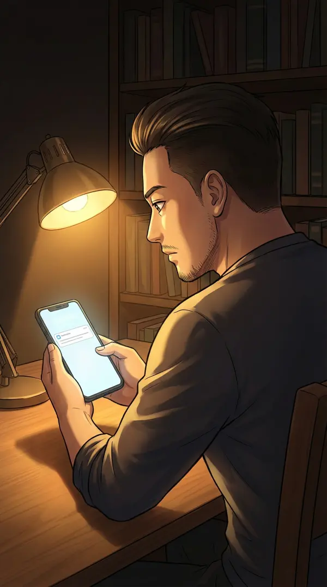
凌晨三点十七分。书房里只亮着一盏台灯，手机屏幕上陈启明的好友申请已经挂了三个小时。头像是一张标准商务照——微笑精准到像经过计算。
三个小时。不是犹豫——是在建模。他为什么在这个时间点主动找我？我查到周铭才48小时，如果他知道了，说明有人在实时通报。如果他不知道……那他的动机就更有趣了。
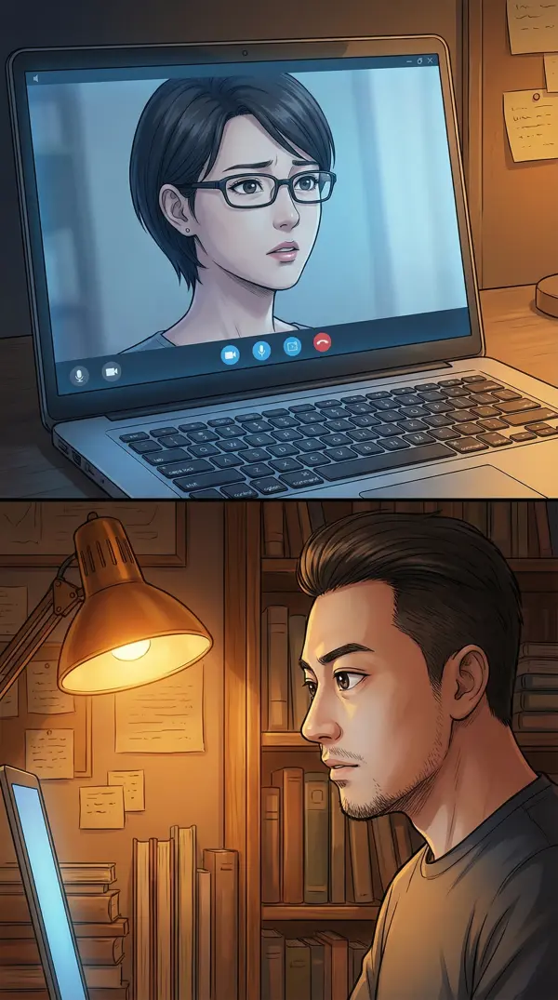
林薇的视频通话还挂着。她窝在家里的工作椅上，显然也没睡。"你不会真想见他吧？"
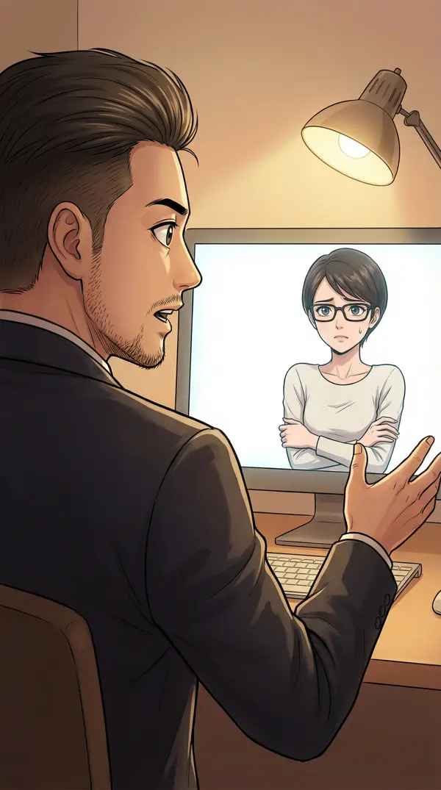
"我不是想见他——我是在想，他为什么在这个时间点主动找我。他不可能知道我查到了周铭。"
"除非——老张告诉他的。"
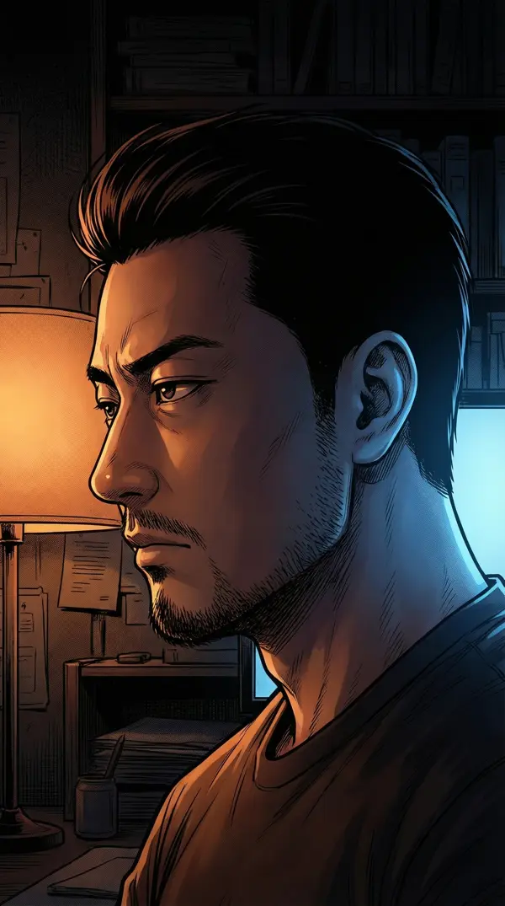
沉默了十几秒。然后一个更危险的念头浮上来："或者，老张根本就不是最核心的人。也许老张也只是棋子。"
🎯 决策点五：如何回应陈启明
A. 不回复，继续暗中收集证据——安全但被动
B. 接受见面，主动进入对方的"局"，反客为主
C. 回复但拖延——"下周有空"，争取时间
▸ 我选B——主动渗透测试
"菩萨心肠霹雳手段。最好的防守是让对方以为自己在进攻。"况且——真正的黑客从不拒绝接触目标系统的机会。
通过好友申请。打了几个字："陈总好，明天下午方便。地点您定？"
然后对林薇说："他一定会选他熟悉的主场。好的渗透测试就是要从目标最自信的地方开始——他们在那里防御最松懈。"
"……你把约见面说得像exploit一样。"
"本来就是。"
第二天下午两点。星图AI总部大楼。整栋楼比我们公司大十倍——全玻璃幕墙，大理石前台，超大LED屏循环播放产品宣传片。
公司大不代表代码好。我见过太多庞大的系统，内核一塌糊涂。
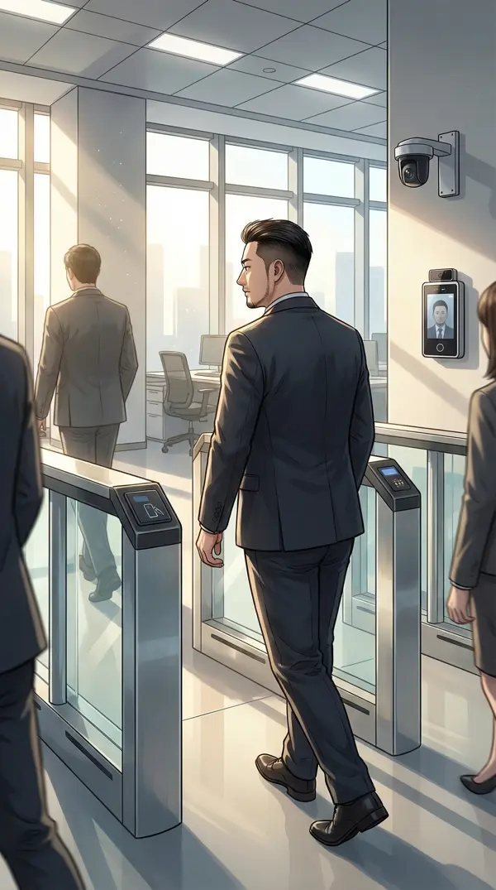
前台指引我到顶楼会议室。一路上我扫描了他们的安保——门禁卡、人脸识别、访客胸牌。所有的外部防御都到位了。
但如果内部有人像老张一样……再好的门禁也挡不住。内部威胁永远是最难防的。
电梯里只有我一个人。偷偷对着反光玻璃整理了一下领口，自言自语："上次这么紧张还是大学时候第一次参加CTF比赛。"
然后电梯门开了——直接就是会议室。
我还保持着整理衣领的姿势。门外陈启明和两个助理正看着我。
顶楼会议室。落地窗外是整个城市的天际线，下午的阳光斜射进来，在长桌上画出明亮的光影。
陈启明站起来迎接，微笑完美得像经过训练："朱总，终于见面了。久闻大名。"
他的手干燥有力——这不是一个紧张的人。瘦高个，深色西装笔挺，金框眼镜后面是一双极其锐利的眼睛。鹰钩鼻让整张脸有种不容忽视的侵略感。
和老张完全不同。老张是笑面虎，这位……是直接亮爪子的猛禽。
"陈总太客气。星图AI最近发展很快，行业都在看。"
试探性恭维——看他怎么接。
"全靠团队。对了，我让人准备了咖啡——听说你喜欢美式？"
他查过我。知道我喝什么。这不是临时约见——他准备了很久。好的安全从业者应该感到警觉。而我感到的是……兴奋。
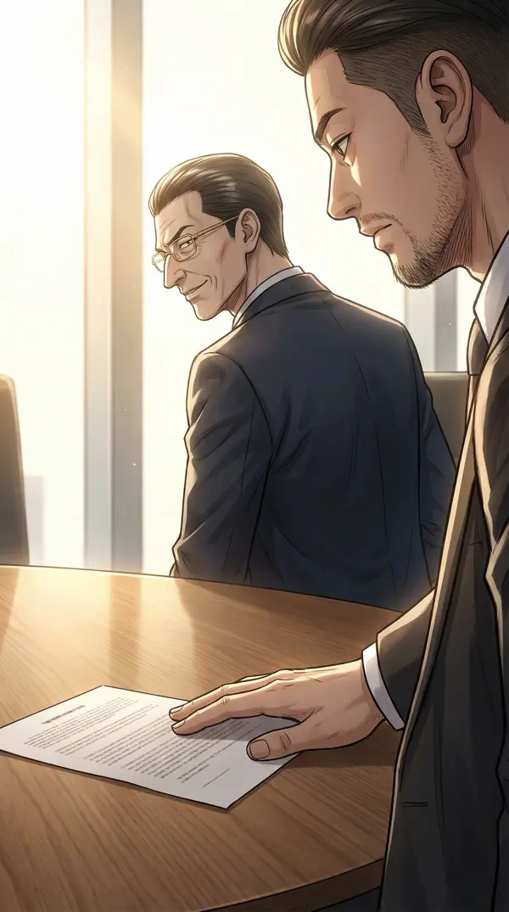
会议桌上放了一份文件，标题朝下翻着。陈启明注意到我扫了一眼，微笑着没说话。
故意摆在那里的——像漏洞利用前的信息侦察，先让目标好奇。
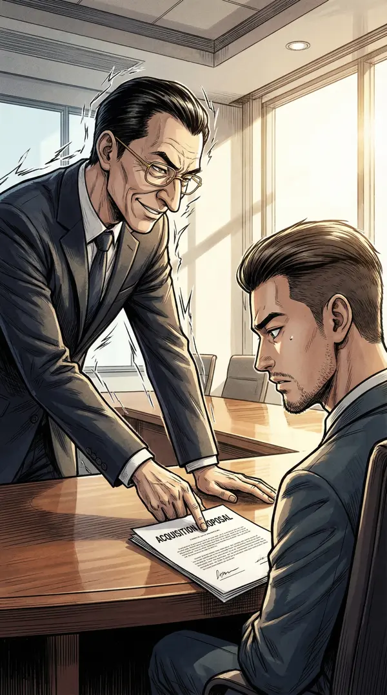
陈启明翻开那份文件推到我面前——是一份收购意向书。
"朱总，我们不绕弯子。星图AI想收购你们公司。估值，你开。"
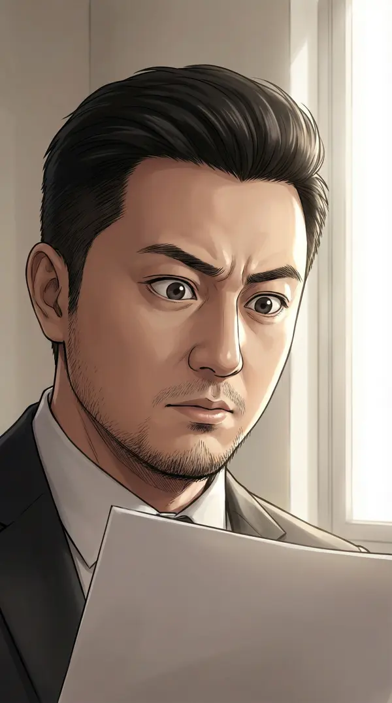
控制住表情。这比我预想的大一百倍——不是合作，不是投资，是直接收购。
瞬间，所有碎片拼成了完整的exploit chain：2000万买老张→偷代码→压低估值→低价收购→获取全部技术资产。"一期款"的含义终于浮出水面——这只是整条杀伤链的前半段。
端起咖啡喝了一口。味道不错——至少这个美式是真心的。
"陈总出手很大方。但我有个疑问——你们的技术团队很强，为什么需要收购我们？"
陈启明笑容不变："人才。AI行业最缺的不是代码，是人。你和林薇就值这个价。"
他绕开了"代码"两个字。一个正常的CEO会说"技术"——他用"人才"替代，因为他知道他已经有我们的代码了。潜意识泄露。
放下咖啡杯时手微微颤了一下——不是害怕，是兴奋。林薇如果在这里一定会吐槽"你又是那个发现漏洞的表情"。
假装考虑了三秒钟。"收购……不是不可以谈。但我有个好奇——陈总怎么知道我们的模型好？"
"行业口碑。你们上次demo的效果圈里都传开了。"
"那个demo是三个月前的。三个月前你们就开始准备收购了？"
陈启明第一次停顿了0.3秒。"……不是。最近才起意。"
给这个停顿打了标记。0.3秒——刚好够大脑编一句话但不够编一个逻辑自洽的故事。
然后说出准备好的炸弹：
"也是巧了——三个月前，我们有个投资人也突然活跃起来。叫张总，不知道陈总认识吗？"
房间温度仿佛降了两度。
陈启明的微笑变了——从职业性变成了评估性。他在重新打量我。"做投资的张总？这个姓挺常见的，AI圈里姓张的投资人不少。"
我微笑着不说话。
沉默就是最好的压力测试。让对方的想象力自己运转——他不知道我到底知道多少，而不确定性会让人犯错。
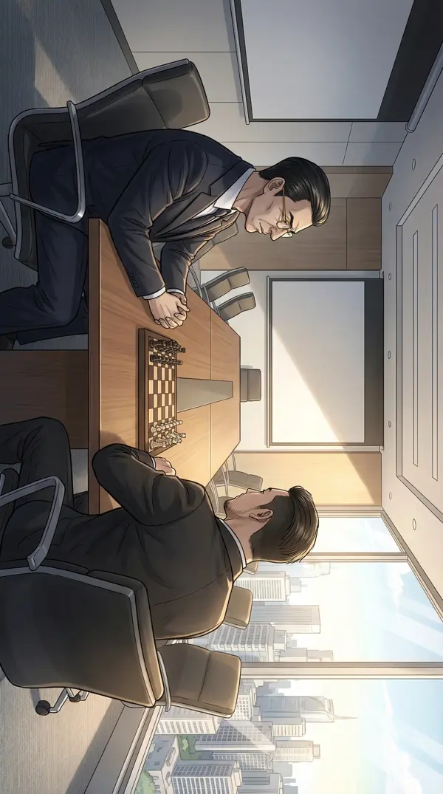
空气凝住了五秒。陈启明在笑，我也在笑。两个人都知道对方在演。
这一刻整个会议室就像一个CTF靶场——我们都在试探对方的防线。
🎯 决策点六：底牌何时出
A. 现在摊牌——把exploit chain全部甩出来
B. 继续不亮底牌，保持信息不对称
C. 提交换条件——"你告诉我老张拿了多少钱"
▸ 我选B——保持信息不对称
"信息不对称是黑客最大的武器。渗透测试的核心不是你有多少exploit，是对方不知道你有多少。"
"陈总，收购的事我回去认真考虑。不过我还有个小建议——如果你们想做多模态推理方向，我们可以技术合作，不一定要收购那么重。"
"多模态推理"——这是我在饭局上喂给老张的假信息。如果陈启明接了这个词……
陈启明脸上一闪而过的表情被我捕捉——他听说过这个词。犹豫了0.2秒。
"多模态是未来，各家都在布局。"
鱼香肉丝之后，第二个陷阱触发。老张果然把假信息传给了他。证据链又闭了一环。
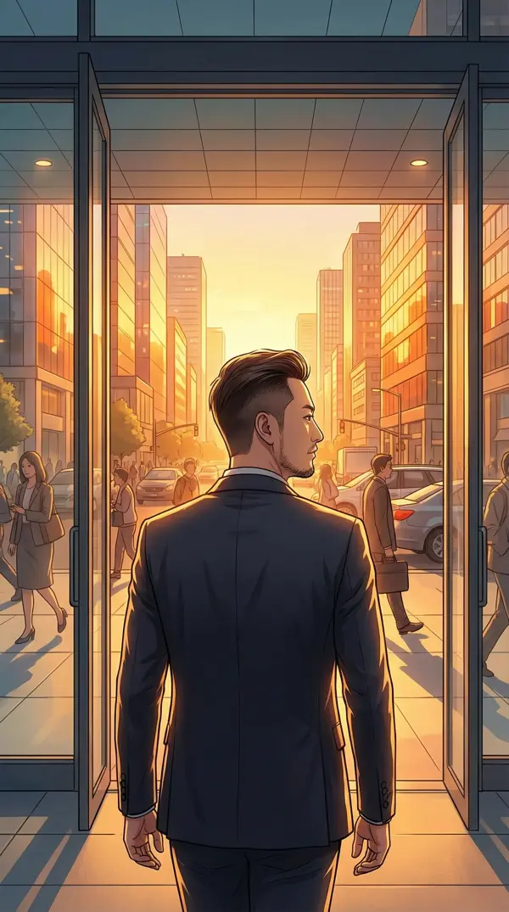
走出大楼。傍晚的夕阳铺满整条街，金色的光照在玻璃幕墙上反射出暖洋洋的光斑。
立刻打电话给林薇。
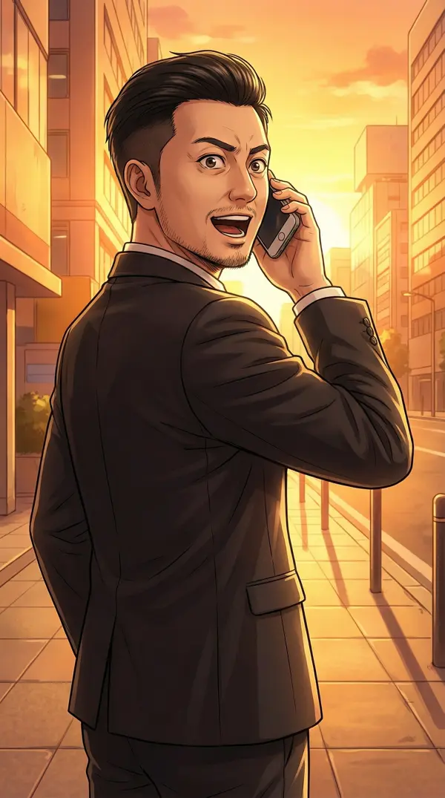
"'多模态推理'的陷阱触发了。他听到这个词的时候有反应——不是惊讶，是'已知'。老张百分百在持续给他喂信息。"
"那你接下来打算……？"
"陈启明不蠢。他今天约我不只是收购——他在评估我到底知道多少。我刚才给了他足够的不确定性。接下来24小时他一定会有动作——要么加速收购施压，要么清理老张这条线。"
站在路边等出租车，突然觉得肚子饿了——中午因为准备见陈启明没吃午饭。打开外卖app，第一眼看到"鱼香肉丝"——笑了出来。
林薇还在电话里："你笑什么？"
"没什么，想起了一个老朋友。"
晚上十点，回到家书房。老张突然发来消息：
"小朱，那个战略投资人那边有进展了。他想把估值再提30%。你看怎么样？"
老张在加速。这只有一个解释：陈启明回去后告诉老张"朱江可能知道了"，老张在慌。一个正常的投资人不会在晚上十点催估值——除非有人在催他。
回复："张总辛苦了。这么好的条件，我肯定认真考虑。周末我们再碰？"
同时打开另一个屏幕——实时监控老张服务器。果然，他的服务器正在大量删除文件。
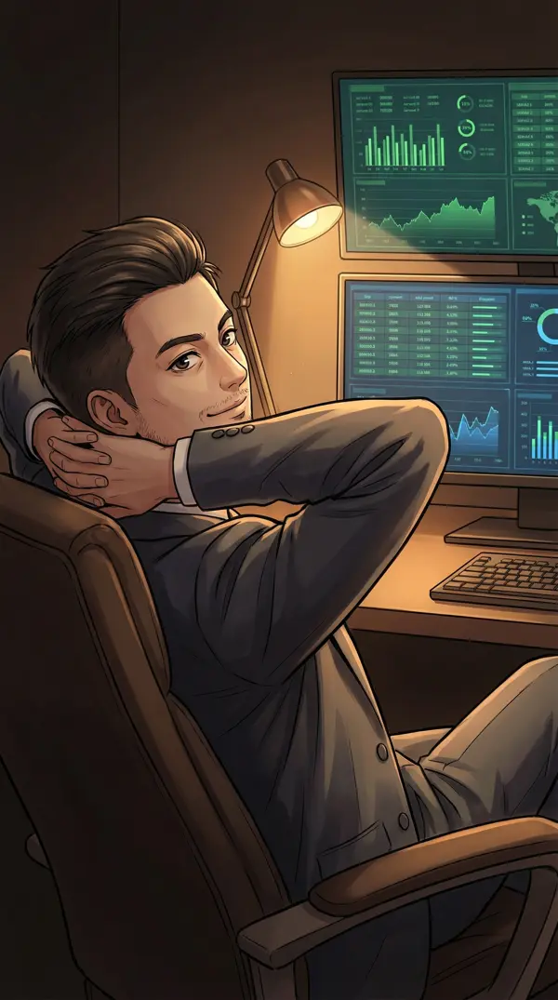
他在消灭证据。但他不知道——我在三天前就镜像了他整个服务器。删吧，删得越多，越说明这些文件重要。
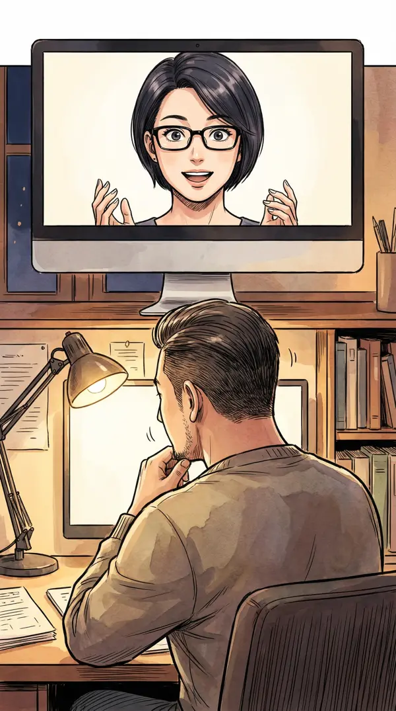
"镜像完整。他删的每一个文件我们都有备份。他现在越慌，我们手里的牌越多。"
林薇顿了一下又说："他以前说自己不懂技术，这删除速度不像不懂的人啊。"
"会装的人才可怕。不过他的rm命令不够彻底——硬盘层面我们还能恢复。"
深夜，公司办公室。明亮的照明下，我和林薇并排坐在工作台前。她推了推眼镜看向我。
"明天我要结束这一切。"
"证据链已经完整：金丝雀水印→小李账号→老张服务器→周铭壳公司→星图AI→2000万转账→陈启明。七个节点，每一环都有数据支撑。"
"你打算怎么结束？"
笑了。"还记得大学时候我们怎么赢CTF的吗？"
林薇也笑了："你要搞一个'responsible disclosure'？"
"差不多。黑客发现系统漏洞后，有两种选择：偷偷利用，或者负责任地披露。我们选第三种——strategic disclosure。"
"明天一早，约老张、陈启明、以及自家投资人团队坐在同一张桌上。在所有人面前，一环一环展示exploit chain。让每个人都看到整条链——然后给陈启明一个选择。"
"如果他当场翻脸？"
"他不会。因为翻脸意味着承认。他唯一的选择是坐下来谈。"
🎯 决策点七：最终对决的底线
A. 要求公开道歉+赔偿+不竞争协议——正义型
B. 包装成"安全审计报告"，给对方体面退出，换取技术合作协议
C. 直接交给律师，走法律程序
▸ 我选B——给体面退出，换技术合作
"菩萨心肠霹雳手段"的终极体现。不是为了毁灭对手，是为了把敌人变成资源。黑客社区responsible disclosure精神——发现漏洞是为了修补，不是为了利用。
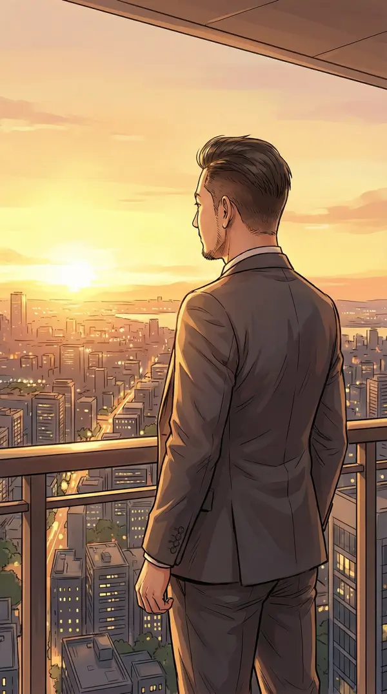
凌晨。一切准备就绪。林薇在会议室布置明天的"表演场地"。
我站在阳台上。城市灯火万家，远处地平线上有最初的晨光。
手机里是明天所有人的会议邀请——老张已确认、陈启明已确认、自家投资人团队已确认。
大学时候第一次参加CTF，最后关头我找到了一个zero-day——所有人都没发现的漏洞。队友问我怕不怕交上去被否定。我说："最好的exploit不需要害怕，因为它是数学上成立的。"
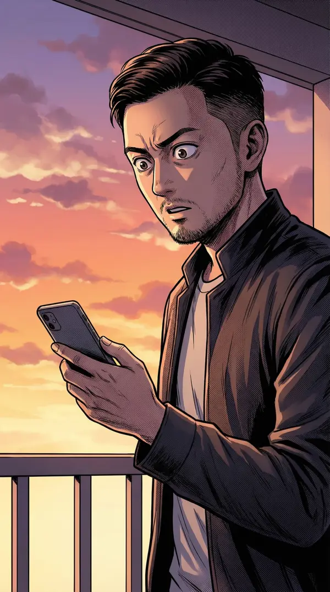
明天的exploit chain也是数学上成立的。每一个节点都有数据证明。
但是——手机又震了。一条匿名短信：
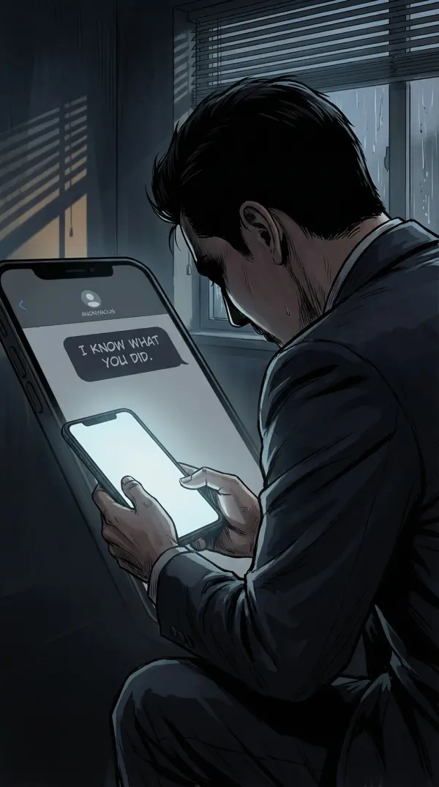
"朱总，明天的会别开了。你不知道水有多深。——一个好心人"
看着这条短信。谁发的？是老张在恐吓？是陈启明的人？还是……还有第三方？
林薇从会议室走出来："准备好了——咦，你脸色怎么变了？"
把手机递给她。
林薇看完后抬头看我："还开吗？"
深吸一口气，看向远处地平线上最初的晨光。
"开。无论水有多深——"
"我是写过0day的人。"
⚡ 第三章完 · 悬念
匿名短信是谁发的？"水有多深"暗示什么？
明天的 strategic disclosure 会议能按计划进行吗？
"一期款"的二期到底是什么？
第四章：高潮对决 · 即将上线